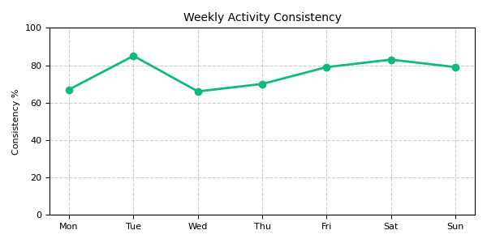

Your FitSync Dashboard
Welcome back, Alex! Let's see how we can support your goals today.
How are you feeling today?
A quick check-in helps us fine-tune your experience.
Select how you're feeling.
Remember to detail ongoing issues in your Health Settings for better long-term adaptation.
This is optional, but helps tailor suggestions.
Today's Suggested Plan
Why this suggestion?
- Aligned with your primary goal: 'Build a habit' (from Settings).
- Based on your feedback yesterday reporting feeling 'tired'.
- Reflects your preference for 'lighter workouts' when energy is low (from Settings).
- Focuses on recovery and light activity to maintain consistency without overexertion today.
Focus: Gentle Movement & Flexibility
Duration: ~25 minutes
Intensity: Light
Recent Progress Snippet
A quick look at your recent activity.
Workouts This Week
3
Consistency Score (7d)
78%

How are you feeling about your progress lately?
Settings & Preferences
Need to update your info, goals, or how FitSync adapts?